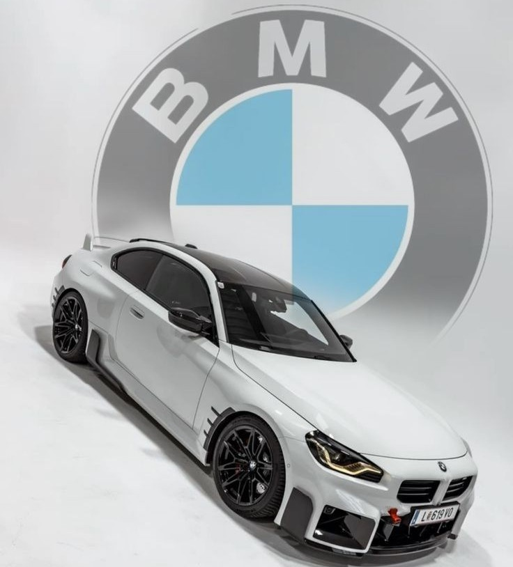

INFORMATION OF BMW
Bayerische Motoren Werke Aktiengesellschaft (BMW AG), trading as BMW Group (commonly abbreviated to BMW (German pronunciation, sometimes anglicised as Bavarian Motor Works), is a German multinational conglomerate manufacturer of luxury vehicles and motorcycles headquartered in Munich, Germany. The moniker, "BMW ", first came into use when the German firm Rapp Motorenwerke changed its name to Bayerische Motoren Werke GmbH (BMW GmbH) in 1917. Thereafter, in 1922, the name and assets of BMW GmbH were transferred to the aircraft manufacturer Bayerische Flugzeugwerke AG (formerly Otto Flugmaschinenfabrik), thereby giving rise to the company known today as BMW AG.
BMW AG's automobiles are marketed under the BMW, Mini, and Rolls-Royce brands while its motorcycles are marketed under the BMW Motorrad brand. In 2023, BMW became the world's ninth-largest producer of motor vehicles (with 2,555,341 vehicles made in that year alone) as well as the 6th largest automaker by revenue. In 2023, it was ranked 46th in the Forbes Global 2000. The company also has significant motor-sport history, especially in touring cars, sports cars, and the Isle of Man TT. BMW AG is headquartered in Munich and produces motor vehicles in Germany, United Kingdom, United States, Brazil, Mexico, South Africa, India, and China. The Quandt family [de] is a long-term shareholder of the company, following investments by the brothers Herbert and Harald Quandt in 1959 which saved BMW from bankruptcy, with remaining shares owned by the public.
History
Main article: History of BMW Otto Flugmaschinenfabrik was founded in 1910 by Gustav Otto in the Kingdom of Bavaria, which was a state of the German Empire. The firm was reorganized on 18 August 1916 into Bayerische Flugzeugwerke AG. This company was then renamed to Bayerische Motoren Werke (BMW) in 1922. However, the name BMW dates back to 1913, when a company using that name was founded by Karl Rapp initially as Rapp Motorenwerke. The name and Rapp Motorenwerke's engine-production assets were transferred to Bayerische Flugzeugwerke in 1922, who adopted the name the same year.[11] BMW's first product was an engine for fighter aircraft of the Luftstreitkräfte. It was a straight-six called the BMW IIIa, designed in the spring of 1917 by engineer Max Friz. Following the end of World War I, BMW remained in business by producing motorcycle engines, agricultural equipment, household items, and railway brakes. The company produced its first motorcycle, the BMW R 32, in 1923. BMW became an automobile manufacturer in 1928 when it purchased Fahrzeugfabrik Eisenach, which, at the time, built the Austin 7 under licence from Automobilwerk Eisenach, badged as the Dixi.[12] The first car sold as a BMW was a rebadged Dixi called the BMW 3/15, following BMW's acquisition of the car manufacturer Automobilwerk Eisenach. Throughout the 1930s, BMW expanded its range into sports cars and larger luxury cars.[13][14] Aircraft engines, motorcycles, and automobiles would be BMW's main products until World War II. During the war, BMW concentrated on building the BMW 801 aircraft engine using as many as 40,000 slave laborers.[15] These consisted primarily of prisoners from Nazi concentration camps, most prominently Dachau. Motorcycles remained as a side-line and automobile manufacture ceased altogether. BMW's factories were heavily bombed during the war and its remaining West German facilities were banned from producing motor vehicles or aircraft after the war. The company survived by making pots, pans, and bicycles. In 1948, BMW restarted motorcycle production. BMW resumed car production in Bavaria in 1952 with the BMW 501 luxury saloon. The range of cars was expanded in 1955, through the production of the cheaper Isetta microcar under licence. Slow sales of luxury cars and small profit margins from microcars, meant BMW was in serious financial trouble and in 1959 the company was nearly taken over by rival Daimler-Benz.[16][17] A large investment in BMW by Herbert Quandt and Harald Quandt resulted in the company surviving as a separate entity. Günther Quandt was a well-known German industrialist and joined the Nazi party in 1933; he made a fortune arming the German Wehrmacht, manufacturing weapons and batteries.[18] Many of his enterprises were appropriated from Jewish owners under duress with minimal compensation. At least three of his enterprises made extensive use of slave laborers, as many as 50,000 in all.[19] One of his battery factories had its own on-site concentration camp, complete with gallows. Life expectancy for laborers was six months.[19][20] While Quandt and BMW were not directly connected during the war, funds amassed in the Nazi era by his father allowed Herbert Quandt to buy BMW.
